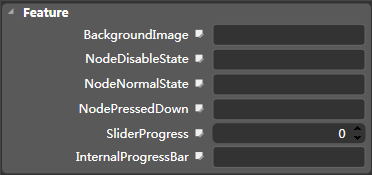

Slider[UISlider]
Icon

Description
The UISlider subclass implements a silder for the touch screen. The UISlider subclass is a subclass of UIWidget.
The widget provides methods to set the slider background images, different states of node resources, the slide's progress value, an internal progress bar of resources and other attributes.
3x3 grids
Common properties
Feature

Background image
Sets a picture (png, jpg) that will be displayed on default status.
Silder progress
Sets the widget's silde progress value in the range between 0 to 100.
Node pressed down state
Sets a picture (png, jpg) to display on press down status.
Node normal state
Set a picture (png, jpg) to display on normal status.
Node disable state
Sets a picture (png, jpg) to display on disabled status.
Slider progress
Controls whether the internal progress bar displays or not.
Internal progress bar
Sets a picture (png, jpg) that to display on normal status.
Copyright © 2013 CocoStudio.org. All Rights Reserved. 版本v1.0.0